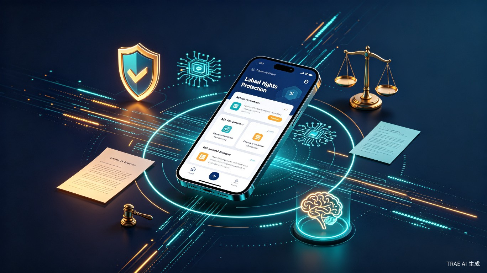
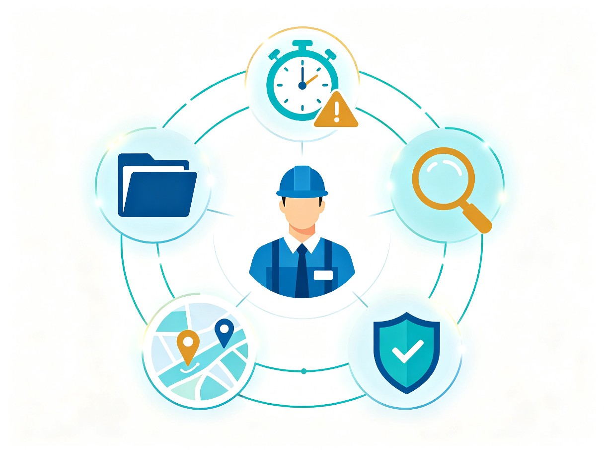

基于120例真实败诉案例深度分析，整合证据管理、时效预警、关系诊断、维权导航、合规保护五大核心能力，为每一位劳动者提供从入职预防到维权落地的全链路智能守护。
劳权卫士 — 让每一份劳动都被公平对待
中国劳动者在劳动争议中败诉率高达60%以上，核心痛点并非法律不公，而是劳动者在维权全链条中缺乏专业指导：不知道收集什么证据、不清楚仲裁时效、搞不清用工关系、找不对维权渠道、不了解职场红线。现有工具分散、专业门槛高，普通劳动者难以获得系统性保护。
基于中国裁判文书网120个员工败诉案例的深度分析，我们发现败诉原因高度集中：举证不能（25%）、严重违纪（14.2%）、法律关系定性错误（11.7%）、仲裁时效经过（8.3%）、渠道错误（6.7%）。这五大因素合计占比超过65%，却缺乏一个整合性的智能解决方案。我们希望通过AI技术，将专业法律服务"普惠化"，让每一位劳动者都能获得触手可及的权益保护。
劳权卫士是一款面向职场劳动者的AI驱动的劳动权益全周期保护平台（App/小程序/网页端），整合五大智能模块，覆盖从入职预防、日常合规、纠纷诊断到维权落地的完整闭环，让劳动者在权益保护的每一个环节都有AI专业护航。
精准定位最需要帮助的劳动者群体
构建劳动权益保护的完整闭环

AI引导日常证据收集，自动识别证据类型、评估证明力，维权时一键生成证据清单和诉讼材料。解决"举证不能"导致25%败诉率的核心痛点。
预防 + 维权自动追踪劳动权益时间线，在仲裁时效节点前发送预警，提供时效中断方案。覆盖二倍工资、加班费、年休假等高频诉求的时效管理。
预警 + 保护AI分析劳动合同与用工事实，自动判断法律关系类型、确定用人单位、适用法律规范，生成个性化维权路径图。避免"告错对象"被驳回。
诊断 + 定位AI判断问题法律性质，确定正确救济渠道（监察/仲裁/法院/行政），预估效率和成功率，提供在线申请指引和材料模板。
导航 + 指引AI分析公司制度与个人行为，智能识别违纪风险点，提供合规建议；记录工作表现与奖惩，为争议提供证据支持。预防"严重违纪"被解除。
预防 + 合规从入职到维权，全周期智能守护
效率提升与社会价值的双重实现
基于120例真实败诉案例的核心发现
| 败诉因素 | 占比 | 对应模块 | 解决方案 |
|---|---|---|---|
| 举证不能 / 证据不足 | 25% | 智证宝 | AI引导证据收集，自动生成证据清单 |
| 严重违纪 / 违反制度 | 14.2% | 合规盾牌 | 红线预警 + 合规建议 + 行为记录 |
| 法律关系定性错误 | 11.7% | 关系透视镜 | AI诊断用工关系，生成维权路径图 |
| 仲裁 / 诉讼时效经过 | 8.3% | 时效卫士 | 自动追踪时效节点，预警 + 中断方案 |
| 维权渠道错误 | 6.7% | 维权导航 | 智能分流，精准匹配救济渠道 |